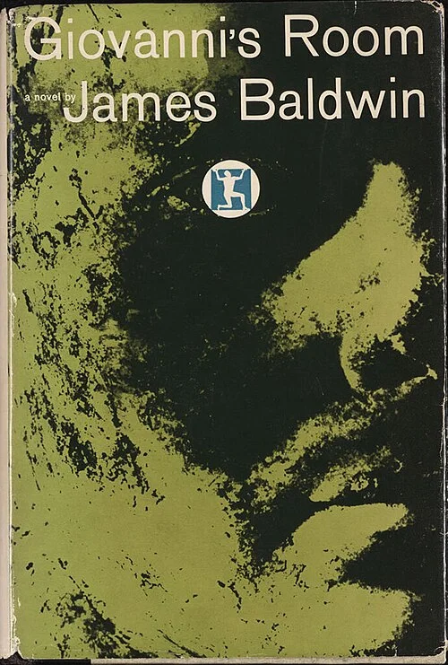

Letterboxd
LetterboxdLetterboxd
영화 중심
- 감상 일지, 별점, 리스트, 활동 피드
- 회원 1,700만 명 이상(2024)
Lecta와 다른 점한 매체 안의 기록이라 영화와 책과 음악을 한 전시에 섞을 수 없음
A living exhibition of what you love, and why.
좋아하는 영화와 책과 앨범을 이유와 함께 하나의 전시로 엮으면, Lecta가 그 방을 읽고 다음 작품을 걸어 줍니다. 같은 기능을 AI 에이전트도 MCP로 씁니다.
 Aftersun
Aftersun Stoner
Stoner Pink MoonLetterboxd
Pink MoonLetterboxd영화 중심
Lecta와 다른 점한 매체 안의 기록이라 영화와 책과 음악을 한 전시에 섞을 수 없음

 왓챠피디아
왓챠피디아영화, 드라마, 책, 웹툰
Lecta와 다른 점매체는 넓지만 점수가 중심이라 왜 좋았는지가 쌓이지 않음

 StoryGraph
StoryGraph책
Lecta와 다른 점감성 추천은 가깝지만 책 한 매체에 머묾

 Sofa
Sofa영화, TV, 책, 앨범, 게임
Lecta와 다른 점매체는 넓지만 표현보다 할 일 관리에 가까움

 Likewise
Likewise영화, TV, 책, 팟캐스트
Lecta와 다른 점교차 매체 추천이지만 내가 엮은 전시와 이유를 근거로 쓰지 않음

 Are.na
Are.na링크, 이미지, 텍스트
Lecta와 다른 점철학은 가장 가깝지만 작품 단위 데이터와 취향 추천이 없음

 Cosmos
Cosmos이미지 중심의 시각 영감
Lecta와 다른 점미감은 가깝지만 작품의 정체성과 감상 이유를 다루지 않음
소비자 앱이 없어 화면 대신 구조로 보여드립니다
영화, 음악, 책, 장소 등 문화 전반
Lecta와 다른 점대규모 집계 데이터라 개인이 남긴 이유와 전시 맥락이 없음
 In the Mood for Love
In the Mood for Love The Remains of the Day
The Remains of the Day Carrie & Lowell
Carrie & Lowell The Sense of an Ending
The Sense of an Ending
Giovanni's RoomStonerAftersun Past Lives
Past Lives Never Let Me Go
Never Let Me Go BlondePink Moon
BlondePink MoonThank you.